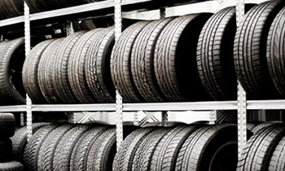

Vulkanizer
Vulkanizerska radnja opremljena je najsavremenijim mašinama za montažu, balansiranje i vulkaniziranje točkova. Auto servis Stop & Go pruža sve vulkanizerske usluge u najkraćem mogućem roku.
Montaža guma predstavlja stavljanje gume na felnu, a demontaža obrnut proces tj. skidanje gume sa felne. Pri montaži, naše osoblje obraća posebnu pažnju da se ne ošteti guma.

Balansiranje je postupak kojim se uravnotežuju mase točkova na različitim stranama iste osovine dodavanjem olovnih tegova na felnu. Na točak, kao i na svako drugo telo, prilikom obrtanja oko neke ose deluje centrifugalna sila. Ukoliko nije uravnoteženo, javlja se disbalans koji se manifestuje podrhtavanjem volana ili podrhtavanjem celog vozila. Ako se balansiranje ne uradi na vreme, gume se troše brže i neravnomernije, stradaju ležajevi, amortizeri i druge komponente sistema oslanjanja. Svakim sledećim montiranjem na točak i nakon popravki, obavezno je balansiranje.
Vršimo i prodaju novih guma renomiranih proizvodjaca. Pored putničkih pneumatika u ponudi su i gume za terenska i laka dostavna vozila. Zimske - Letnje - Univerzalne - Putnički - SUV/4X4 - Laki teretni program pneumatika (Michelin, Kleber, Continental, Goodyear, Dunlop, Pirelli, Kumho, Sava, Tigar, Taurus i dr)
Stop & Go vam omogućava profesionalne, brze i kvalitetne vulkanizerske usluge koje su vam potrebne. Sezonska zamena pneumatika je postala obavezna, na vreme nas pozovite i rezervišite vaš termin kako ne biste gubili dragoceno vreme.
Hotel guma
Kada dođe momenat zamene sezonskih pneumatika, postavlja se pitanje kako i gde ih skladištiti, a da pneumatici ostanu očuvane. U koliko nisu na pravi način i u adekvatnim uslovima uskladištene vrlo brzo će doći do oštećenja ili propadanja pneumatika. Uštedite i ne dozvolite ponovnu investiciju!
Prvenstveno gume treba očistiti od šljunka, kamenčića i ostale prljavštine koja se uvukla među šare. Gume moraju biti obeležene kako bi ste gumu vratili na mesto sa kojeg je i skinuta. Prostor u kojem skladištite gume ne sme biti izložen suncu ili velikim oscilacijama temperature, dakle nikako u blizini grejnih tela, cevi od radijatora i slično. Idealan prostor je zatvorenog tipa, mračan, hladan ili konstantne sobne temperature i čist. Nije dobro da pneumatici budu u blizini ulja, goriva ili hemikalija koje ih mogu oštetiti. Pravilno odlaganje guma podrazumeva da ih očistite, naduvate na preporučeni pritisak, postavite uspravno jednu pored druge na felnama (po mogoćnosti) na polici izdignutoj od zemlje.
Ako nemate prave uslove ili mesta za pravilno odlaganje vaših pneumatika obratite nam se jer smo mi za vas napravili Stop & Go - hotel guma u kome će ostavljeni pneumatici na adekvatan način biti sačuvani za sledeću sezonu!